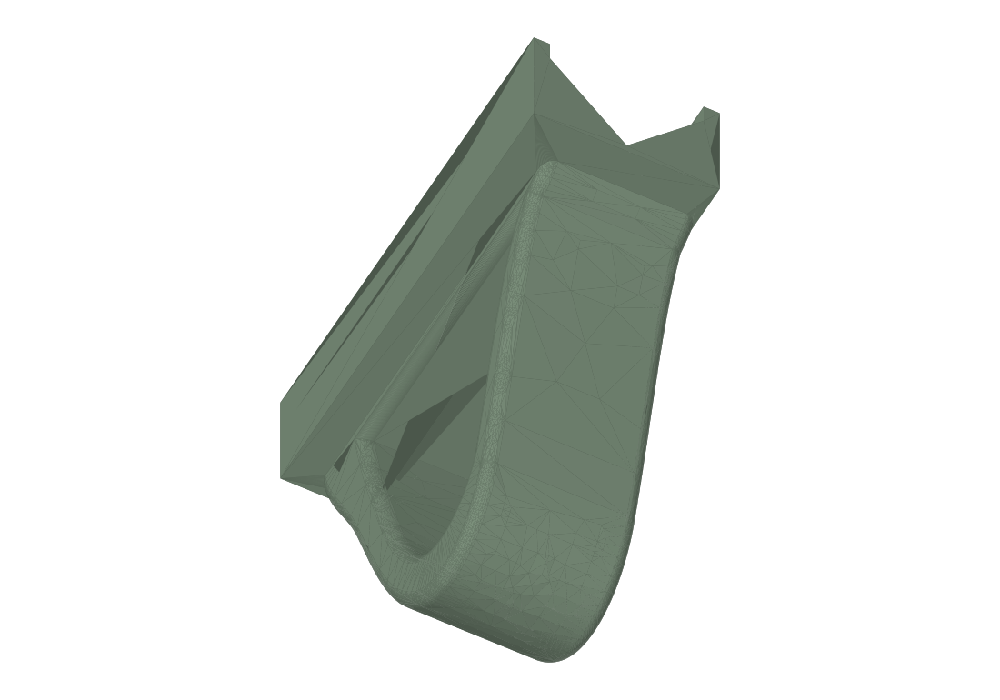

Interchangeable tote grip
Tote grip

Print & assembly notes
Upright with a brim, 5 walls and 25–35% gyroid infill. The 45° internal roof is designed to avoid supports.
Project files & revisions
Additional model files 8
3MFmodels/magnate-5869-caul-250mm-2x4-backed.3mf5 KBSTEPmodels/magnate-5869-caul-250mm-2x4-backed.step387 KBSTLmodels/magnate-5869-caul-250mm-2x4-backed.stl20 KB3MFmodels/magnate-5869-caul-4-pack.3mf16 KBSTLmodels/magnate-5869-caul-4-pack.stl80 KB3MFmodels/magnate-5869-caul.3mf5 KBSTEPmodels/magnate-5869-caul.step387 KBSTLmodels/magnate-5869-caul.stl20 KB